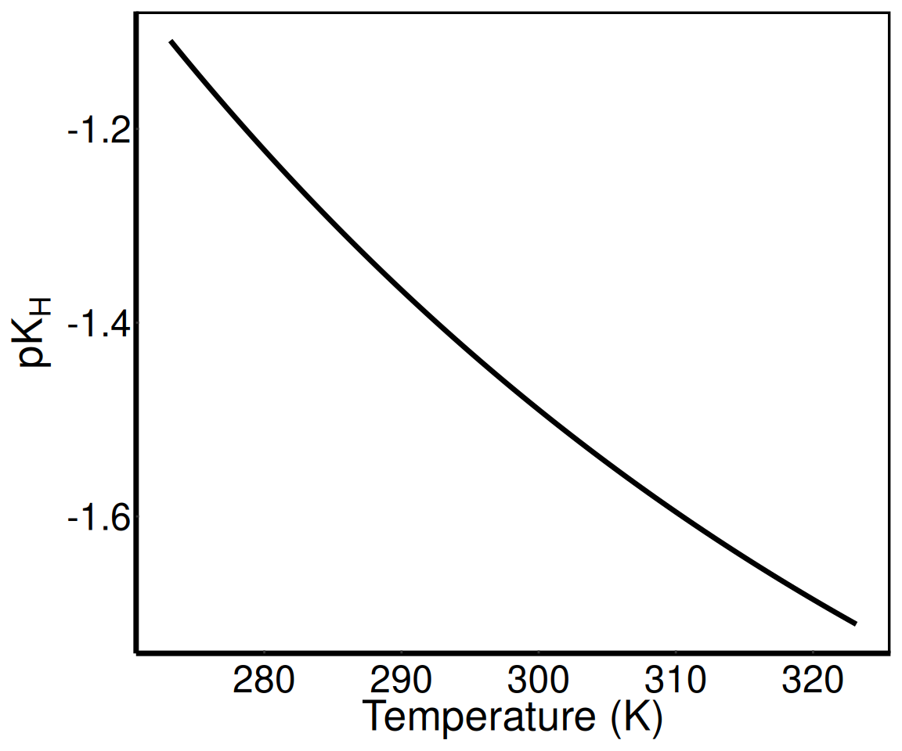
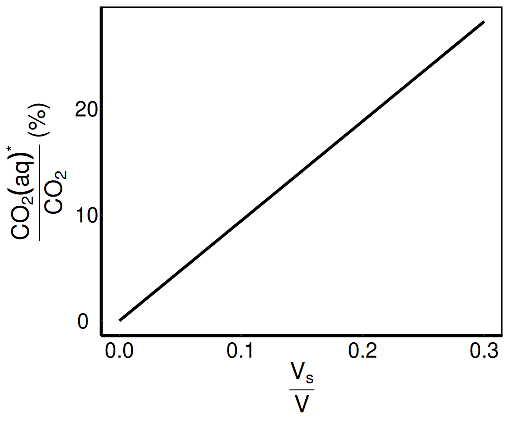
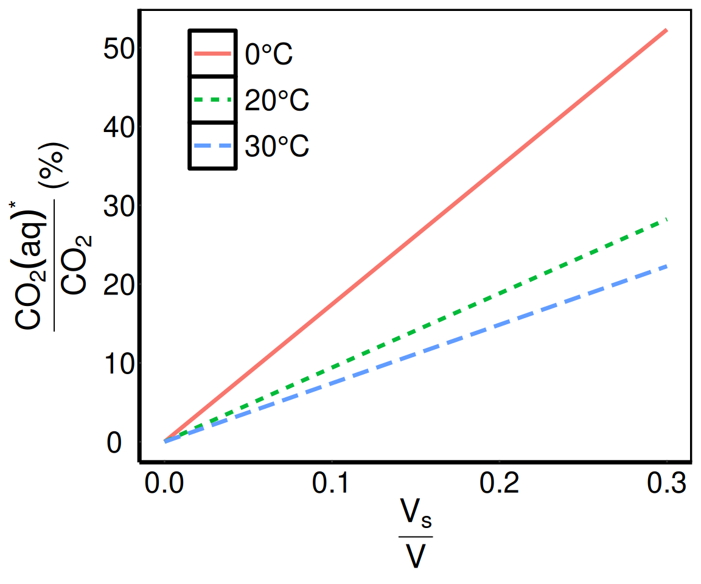
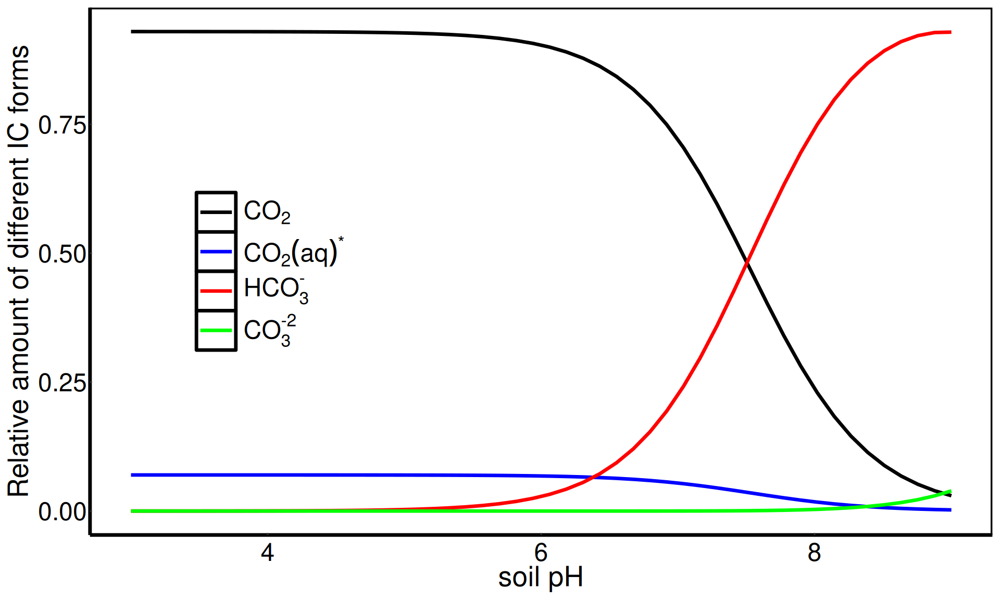
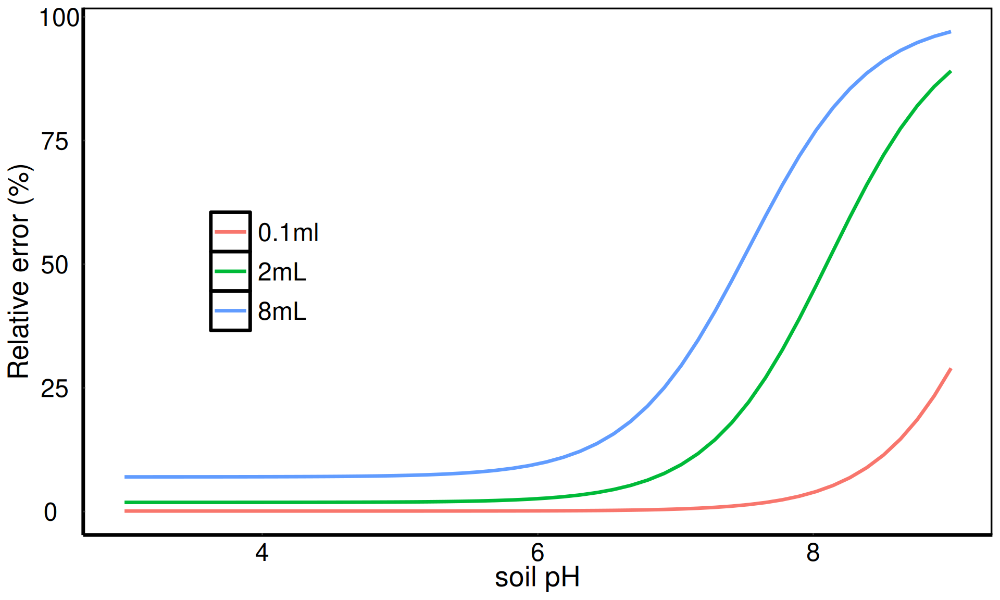
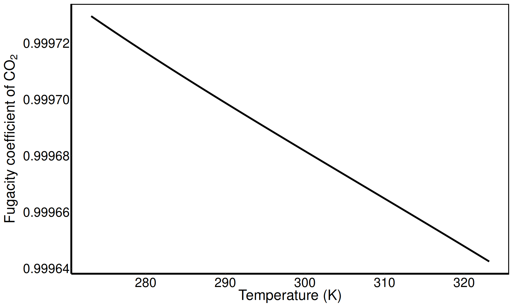
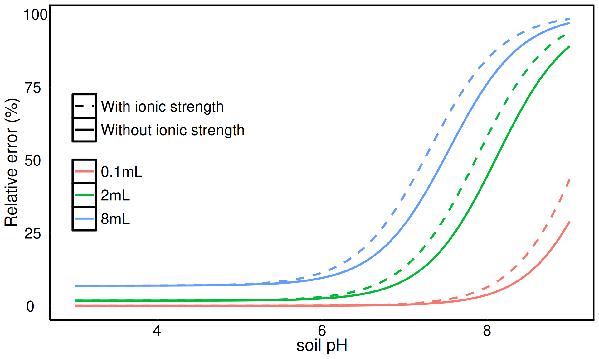

All the calculations begin with the ideal gas law:
\[p \times V = n \times R \times T \tag{1}\]
where \(p\) is pressure, \(V\) is volume, \(n\) is number of moles of ideal gas, \(R\) is universal gas constant, and \(T\) is temperature. The first key consideration is ensuring unit comparability. If we arbitrarily select \(R = 8.314 \frac{J}{mol \times K}\), \(T\) must be in Kelvins (K), \(n\) in moles, \(p\) in Pascals (Pa), and \(V\) in cubic meters (\(m^{3}\)) since the derived units joules and pascals are defined as \(J = \frac{kg \times m^{2}}{s^{2}}\) and \(Pa = \frac{kg}{m \times s^{2}},\) respectively:
It may be convenient to redefine the units in Equation 2 to express the volume of the container headspace in mL instead of cubic meters and the gas pressure in atmospheres instead of Pascals. At the sea level, atmospheric pressure is 1 atmosphere (atm), which is a convenient number. To use atm as the unit of pressure, the value of universal gas constant \(R\) must be expressed as \(R = 0.082 \frac{L \times atm}{mol \times K}\). Furthermore, by expressing \(V\) in the more convenient unit of mL while keeping K as the unit of temperature, \(n\) will be expressed in mmol.
Since we are interested in concentration of \(CO_{2}\) in the headspace of closed container, Equation 1 is solved in respect to \(n\):
\[n = \frac{p \times V}{R \times T} \tag{3}\]
Equation 3 applies to all gases in the entire headspace of the container. However, we are only interested in \(CO_{2}\), which occupies a fraction of the headspace. Gas chromatography typically returns the concentration of headspace \(CO_{2}\) in ppm (parts per million). It is convenient to define a new variable \(\beta\) representing the measured \(CO_{2}\) concentration in ppm. For example, if \(\beta\) is e.g. 450 ppm at the beginning of an incubation, then the partial pressure of \(CO_{2}\) (usually denoted as \(pCO_{2}\)) in the headspace of a container that has been closed at atmospheric pressure 1 atm is then \(\beta \times 10^{-6} \times p = 450 \times 10^{-6} \times 1 = 0.000450~atm~(pCO_{2})\). The partial pressure of \(CO_{2}\) in atm is function of \(CO_{2}\) concentration in ppm and pressure in atm. We will use variable \(\beta\) in all equations below rather than \(pCO_{2}\). If the container’s headspace volume is e.g. 100 mL and the container is held at a temperature of \(20°C = 20 + 273.15 = 293.15 K\), the headspace \(CO_{2}\) concentration is:
#universal gas constant in L * atm *mol ⁻1 K⁻1R <-0.082#Headspace CO2 concentration in ppm as provided by GC (beta)beta <-450#Headspace volume (V) in mLV <-100#Atmospheric pressure (p) in atmp <-1#Temperature (T) in KTemp <-293.15#Result is headspace CO2 concentration in mmolround(beta *10^-6* p * V / R / Temp, 4) #mmol
[1] 0.0019
A change in partial pressure of \(CO_{2}\) in the headspace translates to change in \(CO_{2}\) concentration. If the \(\beta\) increases to e.g. \(10^4\) ppm after one week of incubation, the change in \(CO_{2}\) concentration can be calculated using the same approach as for the initial \(CO_{2}\) concentration. The only difference is that \(\Delta \beta\) (i.e. \(10^4 - 450\)) is used instead of \(\beta\):
#universal gas constant in L * atm *mol ⁻1 K⁻1R <-0.082#Headspace CO2 concentration in ppm as provided by GC (beta)beta <-10^4-450#Headspace volume (V) in mLV <-100#Atmospheric pressure (p) in atmp <-1#Temperature (T) in KTemp <-293.15#Result is headspace CO2 concentration in mmolround(beta *10^-6* p * V / R / Temp, 4) #mmol
[1] 0.0397
This results can be normalized to a unit of oven dried soil and time. It is important to note that all other variables stay the same.
Although the procedure may seem straightforward, several aspects require careful attention. In following sections, we will discuss the most important aspects of \(CO_2\) dissolutionthat lead to erroneous results quantitatively:
Laboratory incubations are almost always performed at constant temperature so the variable \(T\) in all equations above is well defined. However, a potential issue arises if the incubation temperature differs from the temperature at which the container was sealed (typically room temperature), as this leads to a change in headspace pressure due to thermal expansion or contraction of the gas. The effect of temperature change on pressure change can be calculated using Equation 1. \(V\) of the container does not change and, for simplicity, \(n\) can be considered constant for some brief period of time. Any change of \(T\) must be compensated by the change of \(p\):
\[\frac{p_1}{T_1} = \frac{p_2}{T_2} \tag{6}\]
The change of \(p\) from \(p_1\), previously defined as 1 atm, to \(p_2\) can be expressed as a function of \(T_1\) and \(T_2\):
If the container is closed at a room temperature of \(20°C = T_1 = 293.15K\) and then stored in an incubator set to \(30°C = T_2 = 303.15K\), the headspace pressure change is:
#Temperature at which the container was closed in K (T1)T1 <-293.15#Incubation temperature in K (T2)T2 <-303.15#Atmospheric pressure (p) in atmp <-1#Result is a pressure change in headspace of closed container in atmround(p*( T2/T1-1), 3)
[1] 0.034
When the \(CO_2\) concentration is calculated using Equation 5, and the headspace pressure is assumed to remain equal to atmospheric pressure (1 atm), in other words, that \(\Delta p = 0\), results will be inaccurate. To correct for the change in temperature, the overpressure, defined by the term \((\frac{T_2}{T_1} - 1)\) has to be released from the incubation jar so that \(p_2 = p_1\), and Equation 5 is used only with values of \(p_1 = p_2\) (1 atm) and \(T_2\) (303.15 K).
If \(T_2\) differs from \(T_1\) and the pressure changed, we need to use \(p_2\), which is a function of \(p_1\), \(T_1\) and \(T_2\) (\(p_2 = p_1 \times \frac{T_2}{T_1}\)):
The relative error associated with disregarding the pressure change induced by a change in \(T\) can be defined with respect to \(\Delta CO_{2}(\Delta p \neq 0)\) for example using the following equation that combines Equation 5 and 10:
If \(\frac{T_1}{T_2} = \frac{293.15}{303.15}\), the relative error in the calculated \(CO_2\) concentration due to the invalid assumption that the headspace pressure remains constant is:
#Temperature at which the container was closed in K (T1)T1 =293.15#Incubation temperature in K (T2)T2 =303.15#Result is a relative error of the result in %round((T1/T2-1) *100 , 1)
[1] -3.3
Our result is underestimated by approx. 3%. If the \(T_2\) is lower than \(T_1\), e.g. the temperature in incubation vessel is lowered to \(5°C = 278.15K\), the relative error is \((\frac{293.15}{273.15}-1) \times 100 = 5.4 \%\) thus, the result is slightly overestimated. An underestimation of the result by 10% is achieved when incubation temperature \(T_2\) is around 50°C.
The pressure in the headspace can be also affected by unbalanced exchange of gasses between the soil and headspace. In aerobic incubations, \(CO_2\) production is frequently assumed to be perfectly balanced by \(O_2\) consumption, so one mole of consumed \(O_2\) per one mole of produced \(CO_2\). However, this 1:1 ratio, so called respiration quotient, is not always reached even under aerobic conditions. It could be as high as 1.75 or close to 0.1 (Dilly (2001); Dilly (2003); Dilly (2004); Čapek et al. (2015)). Great changes in headspace pressure can be expected in anaerobic incubations as the increase in \(CO_2\) concentration is not compensated for by the \(O_2\) consumption. The effects of respiration quotient other than 1 and anaerobiosis on headspace pressure change is beyond the scope of this document so it will not be discussed further.
2.0.1 Temperature sensitivity of respiration - case 1
The sensitivity of soil respiration to temperature was commonly expressed as a \(Q_{10}\), as a parameter which defines the relative change in respiration (i.e. change in \(pCO_2\) in the vessel) with a temperature change of 10°C:
Let’s arbitrarily select \(Q_{10} = 2\), i.e. \(\Delta CO_2(T_2)\) is 2 times greater than \(\Delta CO_2(T_1)\) when \(T_2 - T_1 = 10°C\). Even though the \(Q_{10}\) concept is nowadays considered inaccurate, its relative simplicity will allow us to easily quantify the error caused by headspace pressure change. If \(T_2 - T_1 = 10°C\), \(Q_{10}\) can simply be calculated using respiration measured at two different temperatures. We assume that \(T_1\) is laboratory temperature 20°C and \(T_2\) is then 30°C. Using two measured respiration rates, calculated \(Q_{10}\) was experimentally estimated to be 2. However, the headspace pressure change was ignored when respiration at 30°C was calculated. If the respiration is recalculated applying Equation 6, \(Q_{10}\) changes from 2 to:
This change represents the relative error of 3.5%.
3 Water Content
Dissolution of\(CO_2\) in acidic soils
The headspace \(CO_2\) represents only a fraction of the total inorganic carbon (IC) in a closed incubation container with a soil sample. This is because \(CO_2\) can dissolve in soil water. If the dissolved \(CO_2\) is ignored, the respiration rate calculated from \(\Delta \beta\) (Equation 5) may be underestimated. The dissolution process is governed by the following equilibrium reaction:
According to Henry’s law (Sander 2015), the \(CO_2\) dissolved in (soil) water as \(CO_2(aq)^{*}\) (here \(CO_2(aq)^{*}\) represents the sum of \(CO_2(aq)\) and \(H_2CO_3\)) is proportional to the partial pressure of \(CO_2\) in the container’s headspace, which is \(\Delta \beta \times 10^{-6} \times p\) in Equation 4, if we can assume that there is an equilibrium between the two forms of IC (compare Gas exchange kinetics. At that equilibrium, \(CO_2(aq)^{*}\) can be calculated from measured \(\beta\) using an equation:
\[CO_2(aq)^{*} = K_H \times \beta \times 10^{-6} \times p \tag{16}\]
in which \(K_H\) is Henry’s law constant in \(\frac{mol}{L \times atm}\) of the reaction described by Equation 15. Equation 16 was simplified to allow a straightforward calculation.
Equation 16 is frequently transformed by a decadic logarithm and \(K_H\) is expressed as \(pK_H\):
\(pK_H\) is an experimentally derived constant, which is temperature dependent. According to Plummer and Busenberg (1982), the relationship between \(pK_H\) and T (in K again) is:
#Define range of temperatures between 0 and 50°C = 273.15 - 323.15 KTpK0 =seq(273.15, 323.15, length.out =100)#Calculate pK0 according to equation abovepK0 =108.386+0.01985076*TpK0-6919.53/TpK0-40.45154*log10(TpK0)+669365/TpK0^2#Plot the relationshipggplot(data =data.frame(TpK0, pK0), aes(TpK0, pK0)) +geom_line(lwd =1.2) +xlab('Temperature (K)') +ylab(expression(paste(pK[H]))) + theme_min

Figure 1: Relationship between the temperature and Henry’s law constant \(pK_H\) for \(CO_2\).
As shown in Figure 1, \(pK_H\) decreases with increasing temperature. This means that the solubility of \(CO_2\) in water decreases with increasing temperature.
Knowing the experimentally derived value of \(pK_H\), the concentration of \(CO_2(aq)^{*}\) in soil solution (in moles of \(CO_2(aq)^{*}\) per liter) can be calculated. However, our interest lies not in concentration, but in the absolute amount of \(CO_2(aq)^{*}\) within the closed container. This allows direct comparison to the amount of \(CO_2\) in the headspace calculated by Equation 4 and 5. To obtain the absolute amount of \(CO_2(aq)^{*}\) in moles, the \(CO_2(aq)^{*}\) concentration in \(mol \times L^{-1}\) is multiplied by the volume of soil water in mL (\(V_s\)). The result is then in mmols (i.e. 1 mol of \(CO_2(aq)^{*}\) contains 1 mol of IC.
Let’s assume that we incubate 10 grams of fresh organic soil with a pH around 4. The soil was collected from organo-mineral horizon of spruce forest ecosystem and its relative dry weight content is 0.2. The volume of soil water is therefore 8 mL \((10 g \times (1 - 0.2) = 8 g = 8 mL)\). The amount of \(CO_2(aq)^{*}\) in the soil water at 20°C (293.15K), a headspace pressure of 1 atm and an initial \(CO_2\) concentration of 450 ppm is:
#Volume of soil water (Vs) in mLVs =8#Temperature (T) in KTemp =293.15#Atmospheric pressure (p) in atmp =1#Headspace CO2 concentration in ppm as provided by GC (beta)beta =450# #pK0 at temperature T# pK0 = 108.386 + 0.01985076*Temp-6919.53/Temp-40.45154*log10(Temp)+669365/Temp^2;# #Amount of H2CO3 in mmols# H2CO3 = 10^(pK0)*beta*10^-6*p*Vs# print(pK0)# print(H2CO3)# #Calculated amount of H2CO3 divided by the amount of CO2 in the headspace in %# H2CO3/CO2*100# pK_Hround(108.386+0.01985076*Temp-6919.53/ Temp-40.45154*log10(Temp)+669365/ Temp^2,2)
[1] -1.41
Code
# CO_2aq* in mmolround(10^(108.386+0.01985076* Temp-6919.53/ Temp-40.45154*log10(Temp)+669365/ Temp^2) * beta*10^-6*p*Vs, 6)
[1] 0.000141
Code
# CO_2aq* / CO_2 in %round( (10^(108.386+0.01985076*Temp-6919.53/Temp-40.45154*log10(Temp)+669365/Temp^2)* beta*10^-6*p*Vs)/ (beta*10^-6*p*100/0.082/Temp)*100,1)
[1] 7.5
In this example, 0.14 µmol of inorganic carbon (IC) in the form of \(CO_2(aq)^{*}\) is dissolved in the soil water. If this dissolved \(CO_2(aq)^{*}\) is not accounted for in the calculation, the resulting estimate of \(CO_2\) production is underestimated by 7.5%. Since \(pK_H\) is temperature sensitive, it may be interesting to calculate the proportion between \(CO_2(aq)^{*}\) and \(CO_2\) at 0°C (273.15K). This can be done by changing the temperature from 293.15 to 273.15 in the code above. The calculation reveals that at 0°C, \(CO_2(aq)^{*}\) makes up 14% of headspace \(CO_2\):
Code
#Temperature (T) in KTemp =273.15# pK_Hround(108.386+0.01985076*Temp-6919.53/ Temp-40.45154*log10(Temp)+669365/ Temp^2,2)
[1] -1.11
Code
# CO_2aq* in mmolround(10^(108.386+0.01985076* Temp-6919.53/ Temp-40.45154*log10(Temp)+669365/ Temp^2) * beta*10^-6*p*Vs, 6)
[1] 0.00028
Code
# CO_2aq* / CO_2 in %round( (10^(108.386+0.01985076*Temp-6919.53/Temp-40.45154*log10(Temp)+669365/Temp^2)* beta*10^-6*p*Vs)/ (beta*10^-6*p*100/0.082/Temp)*100,1)
[1] 13.9
3.1 Quantitative importance of \(CO_2\) dissolution in acidic soils
The two most important factors that affect how much \(CO_2(aq)^{*}\) can dissolve in the aqueous phase of the soil sample in a closed container are soil water volume and temperature. This can be defined quantitatively.
Soil water content
At a constant temperature, e.g. 20°C, the relative proportion between \(CO_2(aq)^{*}\) and \(CO_2\) in % can be easily expressed when Equation 4 (ideal gas law) and 16 are combined:
Because \(10^{pK_H}\), \(R\) and \(T\) are constant and the product of their multiplication at 20°C is always 0.94, the relative proportion between \(CO_2(aq)^{*}\) and \(CO_2\) is entirely defined by the ratio of soil water volume to headspace volume, both being in mL. If the $ = = 0.08$ as in Equation 5 and 19, the result of Equation 21 is \(0.94 \times \frac{8}{100} \times 100 = 7.5 \%\). The functional relationship between \(\frac{V_s}{V}\) and \(\frac{CO_2(aq)^{*}}{CO_2} \times 100\) is shown in Figure 2.
Code
#Let the nondimensional ratio between Vs (soil water volume in mL) and V %(headspace volume in mL) vary between 0 and 0.3VsToV =seq(0,0.3, length.out =50)# pK0 at 20°C pK0 =108.386+0.01985076*293.15-6919.53/293.15-40.45154*log10(293.15)+669365/293.15^2#The relative proportion between H2CO3 and CO2 at 20°C in % is thenH2CO3_CO2 =10^(pK0)*0.082*293.15*VsToV*100#Plot the relationshipggplot(data =data.frame(VsToV, H2CO3_CO2),aes(VsToV, H2CO3_CO2)) +geom_line(lwd =1.2) +xlab(expression(paste(frac(V[s], V)))) +ylab(expression(paste(frac(CO[2](aq)^{'*'}, CO[2]), " (%)"))) + theme_min

Figure 2: Relationship between the relative amount of \(CO_2(aq)^{*}\) per \(CO_2(gas)\) and relative volume of soil water \(V_s\) in respect to headspace volume \(V\) in a closed cotainer
With increasing water content in the incubated soil sample relative to the gas headspace of the incubation container, the fraction of \(CO_2(aq)^{*}\) increases. This means that, with increasing water content, the estimated total inorganic carbon (IC) in the container is underestimated if the water-soluble fraction of IC is ignored.
Temperature
The effect of temperature on \(CO_2(aq)^{*}\) is more complex as \(T\) affects the \(CO_2\) headspace concentration (Equation 3) and \(pK_H\) (Equation 17). When we plot the effect of temperature as we did for the effect of water content in Figure 2, the slope of the linear relationship decreases with increasing temperature. This means that the amount of IC in the water phase of the sample increases with decreasing temperatures. Figure 3 shows the relationship between \(\frac{V_s}{V}\) and \(\frac{CO_2(aq)^{*}}{CO_2}\) at the three different temperatures - 0, 20 and 30°C:
Code
#We have three different temperatures - 0, 20 and 30°CTemps <-matrix(c(273.15, 293.15, 303.15), nrow =1);#Therefore, we need three different values of pK0pK0s =108.386+0.01985076*Temps-6919.53/Temps-40.45154*log10(Temps)+669365/Temps^2;#Let the nondimensional ratio between Vs (soil water volume in mL) and V %(headspace volume in mL) vary between 0 and 0.3VsToV =seq(0,0.3, length.out =50);#The relative proportion between H2CO3 and CO2 at three different temperatures in % isH2CO3_CO2s = VsToV%*%(10^(pK0s)*Temps)*0.082*100;fig3Data <-data.frame(H2CO3_CO2 =as.numeric(H2CO3_CO2s), VsToV =rep(VsToV, times =3), Legend =rep(c('0°C', '20°C', '30°C'), each =length(VsToV)))ggplot(fig3Data, aes(VsToV, H2CO3_CO2)) +geom_line(lwd =1.2, aes(color = Legend, linetype = Legend)) + theme_min +xlab(expression(paste(frac(V[s], V)))) +ylab(expression(paste(frac(CO[2](aq)^{'*'}, CO[2]), " (%)"))) +theme(legend.title =element_blank(), legend.position =c(0.2, 0.8))

Figure 3: Relationship between the relative amount of \(CO_2(aq)^{*}\)\(CO_2(gas)\) and relative volume of soil water \(V_s\) in respect to headspace volume \(V\) in a closed cotainer incubated at three different temperatures 0, 20 and 30°C
Ignoring \(CO_2\) dissolution has little effect on the calculated respiration rates in acidic soils with low moisture, large headspace, and high temperature. However, respiration is likely underestimated due to high \(CO_2\) solubility in wet soils or peat samples incubated in small containers at low temperatures.
3.1.1 Temperature sensitivity of respiration - case 2
In the following we will extend the effect of headspace pressure change on temperature sensitivity in case 1 (2.0.1) for the effect of \(CO_2\) dissolution in acidic soil water, including the temperature sensitive \(pK_H\). To do so, we combine Equation 13 with the ideal gas law (Equation 3), for two different temperatures \(T_1\) and \(T_2\) (whose difference is 10°C again). We can to express the apparent \(Q_{10}^{app}\) as a function of \(\Delta \beta_1\) and \(\Delta \beta_2\) measured at the GC for \(T_1\) and \(T_2\):
We assume that \(Q_{10}^{app}\) is 2. Now, we will calculate the true \(Q_{10}\) that considers all forms of IC in our closed incubation container, i.e. \(CO_2\) and \(CO_2(aq)^{*}\). To do so, \(Q_{10}\) is calculated using following equation:
#Headspace volume (V) in mLV =100#Volume of soil water (Vs) in mLVs =8#Incubation temperatures in KTemp1 =293.15Temp2 =303.15round(2*(Temp2/Temp1)*( V/0.082/ Temp2 +10^(108.386+0.01985076* Temp2-6919.53/ Temp2-40.45154*log10( Temp2)+669365/ Temp2^2)* Vs)/ ( V/0.082/ Temp1 +10^(108.386+0.01985076* Temp1-6919.53/ Temp1-40.45154*log10( Temp1)+669365/ Temp1^2)* Vs), 2)
[1] 1.97
Here, \(Q_{10}\) is lower than \(Q_{10}^{app}\). However, if \(T_1\) and \(T_2\) are 0 and 10°C, respectively, \(Q_{10}\) becomes 1.93. If \(V_s\) is only 1 mL, \(Q_{10}\) is 2. If we further acknowledge pressure change due to transfer of closed container from 20 to 30°C, \(Q_{10}=1.97\) is further multiplied by \(\frac{303.15}{293.15},\) and we obtain \(Q_{10}=2.04,\) which is higher than \(Q_{10}^{app}\).
4 Neutral and Alkaline Soils
Dissolution of\(CO_2\) in neutral and alkaline soils
When the soil solution is neutral or even alkaline (pH>6.5), the dissolved \(CO_2(aq)^{*}\) will further dissociate to \(HCO_3^{-}\) and \(CO_3^{-2}\) according to following reaction formulas (keep in mind that \(CO_2(aq)^{*}\) is defined as sum of \(CO_2(aq)\) and \(H_2CO_3\)):
\[CO_2(aq)^{*} ~ or ~ H_2CO_3 \rightleftarrows H^+ + HCO_3^- \tag{26}\]
In this case, the IC in the soil water is no longer in equilibrium with gaseous \(CO_2\) alone, but also with \(H^+\), whose concentration defines the pH. The respective equilibria are defined as:
Both equations can be again transformed by decadic logarithm. Defining \(pH\) as \(-log(H^+)\) and expressing the decadic logarithm of \(K_1\) and \(K_2\) as \(pK_1\) and \(pK_2\), respectively, we get two equations that allow us to calculate concentrations of \(HCO_3^-\) and \(CO_3^{-2}\):
Equation 30 and 31 imply that concentration of both IC species, bicarbonate (\(HCO_3^-\)) and carbonate (\(CO_3^{-2}\)), increases with increasing soil pH. If the concentration of \(CO_2(aq)^{*}\) is known (by Equation 17) and soil pH is measured, the concentration of both forms of IC can be calculated. This requires knowledge of the two equilibrium constants, \(pK_1\) and \(pK_2\), whose values are temperature dependent (Plummer and Busenberg (1982)):
To do so, we need to know \(\beta\) (measured by GC), atmospheric pressure (\(p\)), headspace volume (\(V\)), volume of soil water (\(V_s\)), temperature (\(T\)), soil pH, and the three experimentally derived constants \(pK_H\), \(pK_1\) and \(pK_2\) whose values depend on \(T\) according to Equation 18, 32 and 33, respectively. If we first attempt to calculate the relative amount of all four IC forms in respect to total IC, \(\beta\) and \(p\) do not need to be known. Let’s assume again that \(V = 100mL\), \(V_s = 8 mL\), \(T = 293.15K\), and soil pH may vary between 3 and 9. The relative amount of all IC forms in closed container along the pH gradient is shown in the graph below:
Code
#Headspace volume (V) in mLV =100#Volume of soil water (Vs) in mLVs =8#Incubation temperature in KTemp =293.15#Gradient of soil pHpH =seq(3, 9, length.out =50)#Constants pK0, pK1 and pK2 calculated using eqs. 18, 31 and 32 pK0 =108.386+0.01985076* Temp-6919.53/ Temp-40.45154*log10( Temp)+669365/ Temp^2; pK1 =-356.3094-0.06091964* Temp +21834.37/ Temp +126.8339*log10( Temp) -1684915/ Temp^2; pK2 =-107.8871-0.03252849* Temp +5151.79/ Temp +38.92561*log10( Temp) -563713.9/ Temp^2;#CO2/IC in eq. 34 divided by eq. 38 CO2 = V/0.082/ Temp/( V/0.082/ Temp+ Vs*(10^pK0 +10^(pK0 + pK1 + pH) +10^(pK0 + pK1 + pK2 +2*pH)));#H2CO3/IC in eq. 35 divided by eq. 38 H2CO3 =10^pK0* Vs/( V/0.082/ Temp+ Vs*(10^pK0 +10^(pK0 + pK1 + pH) +10^(pK0 + pK1 + pK2 +2*pH)));#HCO3-/IC in eq. 36 divided by eq. 38 HCO3 =10^(pK0 + pK1 + pH)* Vs/( V/0.082/ Temp+ Vs*(10^pK0 +10^(pK0 + pK1 + pH) +10^(pK0 + pK1 + pK2 +2*pH)));#CO3-2/IC in eq. 37 divided by eq. 38 CO3 =10^(pK0 + pK1 + pK2 +2*pH)* Vs/( V/0.082/ Temp+ Vs*(10^pK0 +10^(pK0 + pK1 + pH) +10^(pK0 + pK1 + pK2 +2*pH))); fig5Data <-data.frame(IC =c(CO2, H2CO3, HCO3, CO3), pH =rep(pH, 4), Legend =rep(c('a', 'b', 'c', 'd'), each =length(pH)))#IC_labeller <- as_labeller(c(a="CO_2", b="CO_2(aq)^{*}", c = "HCO_3^-", d = "CO_3^{-2}"), default = label_parsed)ggplot(data = fig5Data, aes(pH, IC)) +geom_line(lwd =1.2, aes(color = Legend)) +scale_color_manual(values =c('black', 'blue', 'red', 'green'),labels =c(a =expression(paste(CO[2])),b =expression(paste(CO[2](aq)^{'*'})),c =expression(paste(HCO[3]^{"-"})),d =expression(paste(CO[3]^{"-2"})) )) +xlab('soil pH') +ylab('Relative amount of different IC forms') + theme_min +theme(legend.title =element_blank(), legend.position =c(0.2, 0.5))

Figure 5: Distribution of relative amounts of \(CO_2(gas)\), \(CO_2(aq)^{*}\), \(HCO_3^{-}\) and \(CO_3^{-2}\) along the gradient of soil pH, for \(V = 100mL\), \(V_s = 8 mL\) at \(T = 293.15K\)
Two sources of variability must be explicitly highlighted:
Temperature
The temperature significantly affects \(CO_2\) solubility. The graph above representing a scenario for 20°C can be redrawn applying two other temperatures - 0 and 30°C. For simplicity, we will only plot \(CO_2\) and \(HCO_3^-\) as two dominant forms of IC:
Figure 6: Distribution of relative amounts of gaseous \(CO_2\) and \(HCO_3^{-}\) along the gradient of soil pH at three different temperatures 0, 20 and 30°C
Figure 6 shows that the relative distribution of the two dominant IC forms changes with temperature. With increasing temperature, the relative amount of \(CO_2\) increases.
Soil water content
The volume of soil water is has a great effect, as the absence of water logically means absence of dissolved IC forms. We will redraw the Figure 6 but this time, 0.1, 2 and 8 mL of soil water will be considered.
Figure 7: Distribution of relative amounts of \(CO_2(gas)\) and \(HCO_3^{-}\) along a gradient of soil pH at three different volumes of soil water 0.1, 2 and 8mL
The distribution of dominant IC forms changes dramatically. If soil water volume is very low, \(CO_2\) dissolution is not relevant even at pH slightly above 7. It is, however, it’s not recommended to incubate soil with such a low water content, because the soil microbial community may be water limited. We will use Figure 7 to visualize the relative error of IC underestimation in % if the \(CO_2\) dissolution and further dissociation is completely neglected.
Code
#Headspace volume (V) in mLV =100#Incubation temperatures in KTemp =293.15#Volume of soil water (Vs) in mLVs1 =2Vs2 =0.1#Gradient of soil pHpH =seq(3, 9, length.out =50)#Constants pK0, pK1 and pK2 calculated using eqs. 18, 31 and 32 pK0 =108.386+0.01985076*Temp-6919.53/Temp-40.45154*log10(Temp)+669365/Temp^2; pK1 =-356.3094-0.06091964*Temp +21834.37/Temp +126.8339*log10(Temp) -1684915/Temp^2; pK2 =-107.8871-0.03252849*Temp +5151.79/Temp +38.92561*log10(Temp) -563713.9/Temp^2;#CO2/IC in eq. 34 divided by eq. 38 CO2 = V/0.082/Temp/(V/0.082/Temp+8*(10^pK0 +10^(pK0 + pK1 + pH) +10^(pK0 + pK1 + pK2 +2*pH))); CO2_Vs1 = V/0.082/Temp/(V/0.082/Temp+Vs1*(10^pK0 +10^(pK0 + pK1 + pH) +10^(pK0 + pK1 + pK2 +2*pH))); CO2_Vs2 = V/0.082/Temp/(V/0.082/Temp+Vs2*(10^pK0 +10^(pK0 + pK1 + pH) +10^(pK0 + pK1 + pK2 +2*pH)));#Calculating errors when CO2 is considered as a sole form of IC in closed conatiner errCO2 = (1-CO2)*100; errCO2_Vs1 = (1-CO2_Vs1)*100; errCO2_Vs2 = (1-CO2_Vs2)*100; fig8Data <-data.frame(Error =c(errCO2, errCO2_Vs1, errCO2_Vs2), pH =rep(pH, 3), SoilWater =rep(c('8mL', '2mL', '0.1ml'), each =length(pH)))ggplot(data = fig8Data, aes(pH, Error)) +geom_line(lwd =1.2, aes(color = SoilWater)) +xlab('soil pH') +ylab('Relative error (%)') + theme_min +theme(legend.title =element_blank(), legend.position =c(0.2, 0.5))

Figure 8: Effect of soil pH and moisture on the relative error of IC estimation when \(CO_2(gas)\) is considered as a sole form of IC in the closed container
Figure 8 shows the importance of water content in incubation experiments (as we have seen in the chapter above), and that this effect increases with increasing pH. The headspace volume (or rather the ratio of \(\frac{V_s}{V}\)) is also relevant.
4.0.1 Temperature sensitivity of respiration - case 3
Knowing that different equilibrium constants have different temperature sensitivities, it may be interesting to further extend case 2 in (3.1.1). Since the distribution of IC species is strongly pH-dependent, the influence of \(CO_2\) dissolution on \(Q_{10}\) should be evaluated across a pH gradient (from 3 to 9). We will keep \(Q_{10}^{app}\) (Equation 22) and its value (2) unchanged and assume again that \(V = 100mL\), \(V_s = 8 mL\), \(T_1\) and \(T_1\) are 20 and 30°C, respectively. Nevertheless, we need to redefine Equation 23 to acknowledge all IC forms:
Figure 9: The effect of soil pH on \(Q_{10}\) estimates calculated using Equation 39.
Figure 9 shows that the temperature sensitivity of soil respiration originally estimated to be 2 (i.e. \(Q_{10}^{app}\)) may be actually lower when we consider the dissolution of \(CO_2\) and further dissociation. It is further interesting to include another curve on this graph representing different temperature range e.g. 0 and 10°C:
Figure 10: Effect of soil pH on \(Q_{10}\) estimates calculated for two different temperature ranges, 0 - 10°C and 20 - 30°C; using Equation 39.
Figure 10 shows that the variability in \(Q_{10}\) decreases with decreasing temperature. The range of \(Q_{10}\) values is lower when the temperature range of 0 to 10°C is considered. The extent of \(Q_{10}\) underestimation increases strongly above pH ~7.5, because \(CO_2\) dissociates and forms to bicarbonates and carbonates at higher pH, reducing the amount of \(CO_2\) in the container headspace.
Note: Alkaline solutions with high pH, typically NaOH or KOH, are commonly used to trap \(CO_2(gas)\). \(CO_2(gas)\) is rapidly converted to bicarbonate and carbonate effectively removing it from the gas phase. This trapping mechanism is efficient as long as the solution remains alkaline. However, at high \(CO_2\) loading, the solution capacity to trap \(CO_2(gas)\) will be exceeded, causing the pH to drop. To release the trapped \(CO_2\), the solution is can be acidified shifting the equilibrium back toward \(CO_2(gas)\). The amount of trapped \(CO_2(gas)\) can be either determined from the change of solution conductivity or alkalinity (i.e. by estimating the residual amount of alkali).
4.0.2 Microbial physiology metrics - case 4
Respiration rate is one of the most important variables that is used to infer various metrics of microbial physiology such as the metabolic quotient (MMQ), respiratory quotient (RQ) or carbon use efficiency (CUE). Similarly to the example cases 1 to 3, \(CO_2\) dissolution and dissociation can compromise accuracy of these metrics. MMQ and RQ have respiration rate (R) in the nominator:
\[MMQ = \frac{R}{MBC} \tag{40}\]
\[RQ = \frac{R}{O_2 ~ consumption} \tag{41}\]
In Equation 40 and 41, \(MBC\) is microbial biomass carbon and \(O_2 ~ consumption\) denotes oxygen consumption rate. Assuming, for simplicity, no change in \(MBC\) and \(O_2 ~ consumption\) along the pH gradient, the relative error of both metrics is caused by unaccounted \(CO_2\) dissolution and further dissociation and can be expressed as:
The following graph shows the relative error for three different water contents \(V_s\) of 0.1, 2 and 8 mL while assuming \(V = 100mL\) and \(T = 293.15K\).
Figure 11: Effect of soil pH on relative error (in %) of MMQ and RQ estimates calculated for three different volumes of soil water (0.1, 2 and 8 mL) using Equation 42.
Since the error solely depends on change of IC in soil water, Figure 11 is essentially the same as Figure 8.
The situation is slightly different for CUE because R is in the denominator:
\[CUE = \frac{\Delta MBC}{\Delta MBC + R} \tag{43}\]
In Equation 43, \(\Delta MBC\) is the change of MBC over time in the same units as R (i.e. no death rate of microbial biomass is assumed). The relative error can be defined with following equation:
The equation implies that the change in partial \(CO_2\) pressure (\(\Delta \beta \times 10^{-6} \times p\)) needs to be defined to allow the calculation as the amount of produced \(CO_2\) is compared to \(\Delta MBC\). To simplify the equation, we need to link \(\Delta \beta \times 10^{-6} \times p\) to \(\Delta MBC\). The most reliable approach is to use an assumption that respiration equals change in \(\Delta MBC\):
We are assuming that CUE is 0.5 when all forms of IC are accounted for and that \(\Delta MBC\) is the same for all values of soil pH. Combining Equation 44 and 45, we get:
Applying Equation 46, we can plot the relative error of CUE estimation for the three different scenarios of 0.1, 2 and 8 mL volume of soil water while assuming \(V = 100mL\) and \(T = 293.15K\) again.
Figure 12: Effect of soil pH on relative error (in %) of CUE estimates calculated for three different volumes of soil water (0.1, 2 and 8mL) using Equation 46.
The relative error of CUE estimation is similarly to MMQ and RQ more than 90% at high soil pH and \(V_s\).
5 Salinity
Confounding effects of soil solution chemistry
The extent of dissolution of \(CO_2(gas)\) in soil water and further dissociation to \(HCO_3^{-}\) and \(CO_3^{-2}\) is affected by chemical composition of soil solution. The presence of various charged chemical species in soil solution directly affects Henry’s law constant \(pK_H\) and activity of \(H^+\), \(HCO_3^{-}\) and \(CO_3^{-2}\). It is thus necessary to extend the theory further to acknowledge the effect of soil solution chemistry. In next two sections, we will first discuss the activity of \(H^+\), \(HCO_3^{-}\) and \(CO_3^{-2}\) by applying Debye–Hückel equation because the respective mathematical expression is not that difficult to grasp. Then, we will explain the effect of soil solution chemistry on \(pK_H\) by applying Sechenov relationship in its extended form as presented by Weisenberger and Schumpe (1996).
5.1 Estimating activity coefficients using the Debye–Hückel equation
There is a difference between the concentration and the activity of charged species including \(HCO_3^-\), \(CO_3^{-2}\) and \(H^+\). While the concentration refers to the amount of substance per unit volume (e.g. \(mol \times L^{-1}\)), the activity reflects the effective concentration, accounting for interactions between ions in solution. These interactions are significant for all charged species, including \(H^+\), \(HCO_3^-\), \(CO_3^{-2}\), and other cations and anions. The relationship between activity and concentration is defined by an equation:
\[a_s = \gamma_s \times [S] \tag{47}\]
in which \(a_s\) is an activity of charged species of interest, \([S]\) is its concentration in \(mol \times L^{-1}\), and \(\gamma_s\) is nondimensional activity coefficient. The constants \(pK_1\) and \(pK_2\) have been defined for activities of charged species, not concentrations. It is therefore important to determine what could be the error of our calculations when we ignore activity coefficients. To do so, we need to calculate activity coefficients first. This can be achieved by using Debye-Huckel equation:
in which \(z_i\) is charge of ion \(i\), \(\alpha_i\) is its effective size in Angstroms (i.e. 1A = 0.1 nm), \(I\) is the ionic strength of soil solution in \(mol \times L^{-1}\), \(A\) and \(B\) are coefficients of the equation with dimensions \(\frac{L^{0.5}}{mol^{0.5}}\) and \(\frac{L^{0.5}}{A \times mol^{0.5}}\), respectively. There are five different variables in Equation 48, which needs to be known to calculate \(\gamma_{i}\). One that can be directly calculated is \(I\) because:
In@eq-49, \(c_i\) is the concentration of ion \(i\) in \(mol \times L^{-1}\) and \(z_i\) is its charge. Let us to apply this equation to the ion composition of a soil solution reported in Stednick (1984):
Ion
Charge
Concentrations in \(\mu mol \times L^{-1}\)
\(H^+\)
1
1.6
\(K^+\)
1
15
\(Ca^{+2}\)
2
40
\(Mg^{+2}\)
2
23.5
\(Na^+\)
1
96
\(Fe^{+2}\)
2
0.3
\(SO_4^{-2}\)
2
130
\(Cl^-\)
1
273
In this case, the ionic strength (in \(mol \times L^{-1}\)) is:
H =1.6K =15Ca =40Mg =23.5Na =96Fe =0.3SO4 =130Cl =273#Result is ionic strength in mol/Lround(1*10^-6/2*(H*1^2+ K*1^2+ Ca*2^2+ Mg*2^2+ Na*1^2+ Fe*1^2+ SO4*2^2+ Cl*1^2), 6)
[1] 0.00058
Note that pH of this soil is \(-log(1.6 \times 10^{-6}) = 5.8\). With increasing soil pH, the concentration of \(H^+\) decreases accordingly (i.e. concentration of \(OH^-\) is neglected here for the simplicity) and the concentrations of \(HCO_3^-\) and \(HO_3^{-2}\) will increase. At this point, however, we will just ignore change in \(HCO_3^-\) and \(HO_3^{-2}\) to simplify the example.
Coefficients A and B are experimentally derived constants (Hamer (1968)). Their values depend on dielectric constant of water, water density and, most importantly, temperature. For the sake of simplicity, we we will stick to our example assuming a temperature of 20°C. At this temperature, coefficients A and B are \(0.5072 \frac{L^{0.5}}{mol^{0.5}}\) and \(0.3282 \frac{L^{0.5}}{A \times mol^{0.5}}\), respectively. Lastly we have to define the effective ion size (\(\alpha_i\)), which is \(5.4A\) for \(HCO_3^-\) and \(CO_3^{-2}\), and \(9A\) for \(H^+\). At 20°C, the activity coefficients \(\gamma_{HCO_3^-}\), \(\gamma_{CO_3^{-2}}\) and \(\gamma_{H^+}\) in a soil with ionic strength \(5.8 \times 10^{-4}~mol \times L^{-1}\) are:
For \(HCO_3^-\) and \(H^+\), the activity is almost the same as concentration. Nevertheless, the activity of \(CO_3^{-2}\) is lower by 10% than the concentration.
5.2 Approximating activity coefficients using electrical conductivity of soil solution
As it is impractical to measure all charged species in soil solution to calculate \(I\), a more straightforward approach is to measure electrical conductivity of soil solution and use its value to calculate \(I\) using an equation defined by Alva (1991):
in which \(EC\) is the measured electrical conductivity of a soil solution in \(mS \times cm^{-1}\). Across various soils exposed to various treatments, Alva et al. (1991) reported \(I\) to range between 0 and 0.25 \(mol \times L^{-1}\). We will calculate and plot \(\gamma_{HCO_3^-}\), \(\gamma_{CO_3^{-2}}\) and \(\gamma_{H^+}\) across that range of \(I\).
Figure 13: The effect of the ionic strength of a soil solution on the activity coefficients gamma_i of \(HCO_3^{-}\), \(CO_3^{-2}\) and \(H^{+}\) (see Equation 51 to 53).
At high \(I\), activity coefficients could be very low.
Knowing that activity coefficients can have substantial effect, we will redefine Equation 28 - 31 :
To be rigorous, we can also account for non-ideal behavior of \(CO_2\) using a fugacity coefficient \(\gamma_{CO_2}\), which has the similar meaning as the activity coefficient, and it is defined by an equation:
The concentration of \(CO_2(aq)^{*}\) could be multiplied by \(\gamma_{CO_2}\) whose value between 0 - 50°C is shown on following graph:
Code
#Temperature range between 0 and 50°C in KTempF =seq(273.15, 323.15, length.out =50);#fugacity coefficient calculated according to equation 59 (note that the value of R is different due to different units used in the study that defined fugacity coefficient)gammaCO2 =exp(1/(82.056*TempF*(0.10476-61.0102/TempF -660000/TempF^3-2.41*10^27/TempF^12)))ggplot(data =data.frame(TempF, gammaCO2), aes(TempF, gammaCO2)) +geom_line(lwd =1.2) +xlab('Temperature (K)') +ylab(expression(paste(Fugacity~coefficient~of~CO[2]))) + theme_min

Figure 14: Relationship between the temperature and fugacity coefficient of \(CO_2\) (see Equation 59).
As suggested by Figure 14, we can simply assume that \(\gamma_{CO_2} = 1\) in all calculations without causing a substantial error.
We will update Figure 8 by adding three additional lines to account for the effect of soil solution ionic strength of 0.25 \(mol \times L^{-1}\) on \(CO_2\) solubility. For the sake of simplicity, we will assume that ionic strength remains constant with pH. Equation 34 - 35 do not change, but Equation 36 - 38 do (according to Equation 57 and 58):
#Headspace volume (V) in mLV25 =100#Incubation temperature in KTemp25 =293.15#Ionic strengthIS =0.25#Gradient of soil pHpH25 =seq(3, 9, length.out =50)#Three soil moisture - 0.1, 2 and 8 mLVs_s25 =matrix(c(0.1, 2, 8), nrow =1)#Constants pK0, pK1 and pK2 calculated using eqs. 18, 31 and 32 pK025 =108.386+0.01985076*Temp25-6919.53/Temp25-40.45154*log10(Temp25)+669365/Temp25^2; pK125 =-356.3094-0.06091964*Temp25 +21834.37/Temp25 +126.8339*log10(Temp25) -1684915/Temp25^2; pK225 =-107.8871-0.03252849*Temp25 +5151.79/Temp25 +38.92561*log10(Temp25) -563713.9/Temp25^2;#Activity coefficients calculated using eqs. 51 - 53 lgammaHCO3 = (-0.5072*1^2*sqrt(IS)/(1+0.3282*5.4*sqrt(IS))) lgammaCO3 = (-0.5072*2^2*sqrt(IS)/(1+0.3282*5.4*sqrt(IS))) lgammaH = (-0.5072*1^2*sqrt(IS)/(1+0.3282*9*sqrt(IS)))#CO2/IC in eq. 34 divided by eq. 38 - ionic strength is ignored CO2 = V25/0.082/Temp25/(V25/0.082/Temp25+(10^pK025 +10^(pK025 + pK125 + pH25) +10^(pK025 + pK125 + pK225 +2*pH25))%*%Vs_s25);#CO2/IC in eq. 34 divided by eq. 62 - ionic strength is acknowledged CO2_I = V25/0.082/Temp25/(V25/0.082/Temp25+(10^pK025 +10^(pK025 + pK125 + pH - lgammaH - lgammaHCO3) +10^(pK025 + pK125 + pK225 +2*pH25 -2*lgammaH - lgammaCO3))%*%Vs_s25);#Calculating errors when CO2 is considered as a sole form of IC in closed container errCO2 = (1-CO2)*100; errCO2_I = (1-CO2_I)*100; fig15Data <-data.frame(Error =c(as.numeric(errCO2), as.numeric(errCO2_I)), pH =rep(pH25, 6), SoilWater =rep(c('0.1mL', '2mL', '8mL', '0.1mL', '2mL', '8mL'), each =length(pH25)),Legend =rep(c("Without ionic strength", "With ionic strength"), each =length(pH25)*3))ggplot(data = fig15Data, aes(pH, Error)) +geom_line(lwd =1.2, aes(color = SoilWater, linetype = Legend)) +xlab('soil pH') +ylab('Relative error (%)') +scale_linetype_manual(values =c('dashed', 'solid')) + theme_min +theme(legend.title =element_blank(), legend.position =c(0.2, 0.5))

Figure 15: The effect of soil ionic strength, pH and moisture on the relative error of IC estimation when \(CO_2\) is considered as a sole form of IC in the closed container.
As shown in Figure 15, the relative error of IC estimation increases when corrections for soil solution ionic strength (being relatively high in this exercise) are applied. However, the increase is not substantial when compared to the variability of the error along the pH gradient. By manipulating parameter the box for ionic strength, the graph can be redrawn for any value of ionic strength. The key point, which we would like to document here is that accounting for \(CO_2\) dissolution inaccurately using Equation 34 - 37 is more useful than trying to do the calculation as accurately as possible. There is one more confounding effect of soil solution chemistry, which will be discussed in following section.
5.3 Estimating effect of soil solution chemistry on \(pK_H\) using Sechenov relationship
The concentration of ions in soil solution affects not only the activity coefficients but also the solubility of \(CO_2\) through Henry’s law constant \(pK_H\). Unfortunately, the mathematical expression of this effect is difficult to apply accurately in case of soil solution, because several different ions are typically present in there. The general relationship between \(pK_H\) and concentration of ions in soil solution is defined by following equation:
in which \(pK_{H,0}\) is Henry’s law constant for pure water (Equation 18), \(pK_H\) is the constant for a solution that contains several ions (\(i\)). Concentration of each ion in \(mol \times L^{-1}\) is defined by variable \(c_i\) and its effect on \(pK_H\) is defined by a empirically estimated parameter \(h_i\) in \(L \times mol^{-1}\). Finally, variables \(h_{G,0}\) (in \(L \times mol^{-1}\)) and \(h_T\) (in \(L \times mol^{-1} \times K^{-1}\)) are two gas specific (i.e. \(CO_2\) specific in this case) variables, again experimentally derived. The first applies to standard temperature 298.15 K, and the second defines the temperature sensitivity. Every gas has its own \(h_{G,0}\) and \(h_T\), and every ion present in soil solution has its own \(h_i\). Equation 63 cannot be applied if concentrations of all ions in soil solution are not known. This is the reason for why the Equation 63 is so difficult to use. Concentrations of all ions in soil solution is rarely known and that limits the use of eq. 63 Equation 63. We will use the data of Stednick (1984) reported above to quantify the effect of soil solution chemistry on \(pK_H\).
According to Weisenberger and Schumpe (1996), \(CO_2\) specific variables \(h_{G,0}\) and \(h_T\) are respectively \(-0.0172~L \times mol^{-1}\) and \(-0.338 \times 10^{-3}~L \times mol^{-1}\). At 20°C (293.15 K), \(-0.0172 - 0.338 \times 10^{-3} \times (293.15 - 298.15) = -0.01551\) is added to all \(h_i\) of all ions in soil solution. Values of \(h_i\) of each ion measured by Stednick (1984) in soil solution are reported in the table below.
Ion
\(h_i\) in \(L \times mol^{-1}\)
Concentrations in \(\mu mol \times L^{-1}\)
\(H^+\)
0
1.6
\(K^+\)
0.0922
15
\(Ca^{+2}\)
0.1762
40
\(Mg^{+2}\)
0.1694
23.5
\(Na^+\)
0.1143
96
\(Fe^{+2}\)
0.1523
0.3
\(SO_4^{-2}\)
0.1172
130
\(Cl^-\)
0.0318
273
According to Equation 18, \(pK_{H,0}\) is -1.41 at 20°C. Applying Equation 63, \(pK_H\) is expected to be:
The effect of soil solution chemistry on \(pK_H\) is negligible in this case. Equation 63 is typically used to calculate \(CO_2\) solubility in sea water with nearly molar concentrations of \(Na^+\) and \(Cl^-\). The effect of soil solution chemistry on \(pK_H\) can be neglected in many soils. However, in very saline soils this effect becomes significant. Let’s document it on an example.
In the following example, we will use Equation 63 to calculate \(pK_H\) of \(CO_2\) for dry steppe solonetz using measured ion concentrations reported in Endovitsky et al. (2014). The ion concentrations are reported in a table below:
Ion
\(h_i\) in \(L \times mol^{-1}\)
Concentrations in \(mmol \times L^{-1}\)
\(HCO_3^-\)
0.0967
8.88
\(CO_3^{-2}\)
0.1423
0.72
\(Ca^{+2}\)
0.1762
9.73
\(Mg^{+2}\)
0.1694
77.5
\(Na^+\)
0.1143
270.4
\(SO_4^{-2}\)
0.1172
137.2
\(Cl^-\)
0.0318
160.2
According to reported soil solution composition, \(pK_H\) at 20°C is expected to be:
As compared to \(pK_{H,0}\), \(pK_H\) is lower so the \(CO_2\) solubility decreases in this saline soil by \((1 - 10^{-1.468 + 1.41}) \times 100 = 12.5 \%\). Nevertheless, the salinity also affects the dissociation due to high ionic strength of the solution. Let’s compare decrease in solubility with the effect of high ionic strength on the dissociation. To perform the comparison, we need to calculate ionic strength of soil solution using Equation 49:
Knowing the ionic strength, we can further calculate activity coefficients \(\gamma_{HCO_3^-}\), \(\gamma_{CO_3^{-2}}\) and \(\gamma_{H^+}\) using Equation 51 - 53:
Finally, we can quantify the relative change in the amount of IC in soil solution with a composition reported above and pH of 8.85 as compared to pure water using an equation:
The effect of ionic strength on total IC in soil solution through its effect on activity coefficients is greater than the effect of soil solution composition through its effect on \(pK_H\). Even though the high concentration of ions in soil solution reduces solubility of \(CO_2\), it increases the magnitude of dissociation. Neglecting the effect of composition of soil solution will cause an underestimation of total IC rather than overestimation. On the other hand, if we decide to correct our calculations for ionic strength effect only because it is easier to calculate, our results will be overestimated by approx. 30%. Due to such complexity, it is recommended not to use gas chromatography when respiration rate is measured in highly saline soils. Instead, older and, unfortunately, more tedious method of soil incubation with cup containing strong alkali is recommended.
References
Alva, Sumner, A. K. 1991. “Relationship Between Ionic Strength and Electrical Conductivity for Soil Solutions.”Soil Science 152 (4): 239–42.
Čapek, P., Kateřina Diáková, Jan-Erik Dickopp, Jiří Bárta, Birgit Wild, Jörg Schnecker, Ricardo Jorge Eloy Alves, et al. 2015. “The Effect of Warming on the Vulnerability of Subducted Organic Carbon in Arctic Soils.”Soil Biology and Biochemistry 90 (November): 19–29. https://doi.org/10.1016/j.soilbio.2015.07.013.
Dilly, O. 2001. “Microbial Respiratory Quotient During Basal Metabolism and After Glucose Amendment in Soils and Litter.”Soil Biology and Biochemistry 33 (1): 117–27. https://doi.org/10.1016/s0038-0717(00)00123-1.
———. 2004. “Effects of Glucose, Cellulose, and Humic Acids on Soil Microbial Eco-Physiology.”Journal of Plant Nutrition and Soil Science 167 (3): 261–66. https://doi.org/10.1002/jpln.200321041.
Endovitsky. 2014. “THE ASSOCIATION OF IONS IN THE SOIL SOLUTION OF SALINE SOILS.”American Journal of Agricultural and Biological Sciences 9 (2): 238–44. https://doi.org/10.3844/ajabssp.2014.238.244.
Hamer, W. J. 1968. “Theoretical Mean Activity Coefficients of Strong Electrolytes in Aqueous Solutions from 0 to 100 c” NASA-CR-109356.
Plummer, L. Niel, and Eurybiades Busenberg. 1982. “The Solubilities of Calcite, Aragonite and Vaterite in CO2-H2O Solutions Between 0 and 90°C, and an Evaluation of the Aqueous Model for the System CaCO3-CO2-H2O.”Geochimica Et Cosmochimica Acta 46 (6): 1011–40. https://doi.org/10.1016/0016-7037(82)90056-4.
Sander, R. 2015. “Compilation of Henry’s Law Constants (Version 4.0) for Water as Solvent.”Atmospheric Chemistry and Physics 15 (8): 4399–4981. https://doi.org/10.5194/acp-15-4399-2015.
Stednick, J. D. 1984. “Soil Solution Chemistry in a Southeast Alaska Spodosol Suggests Positively Charged Organic Compounds.”Water, Air, and Soil Pollution 23 (3). https://doi.org/10.1007/bf00283203.
Weisenberger, S., and A. Schumpe. 1996. “Estimation of Gas Solubilities in Salt Solutions at Temperatures from 273 K to 363 K.”AIChE Journal 42 (1): 298–300. https://doi.org/10.1002/aic.690420130.